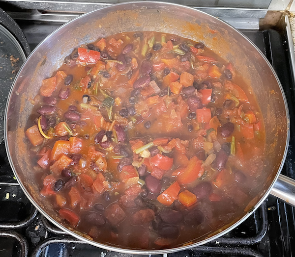
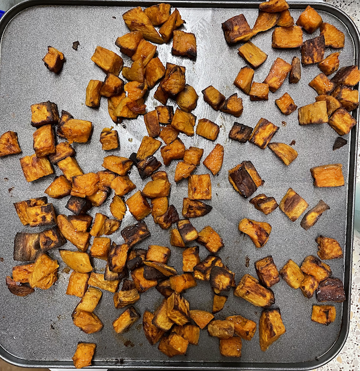
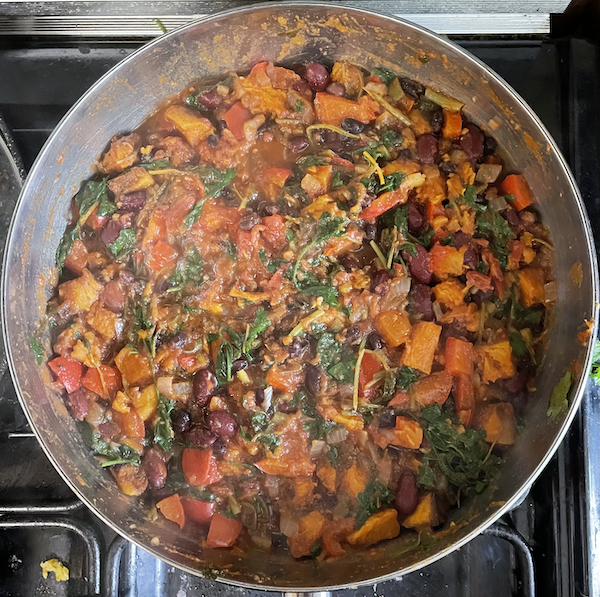

Veggie chilli
Prep before cooking
- Weigh and start rice
- Prep all veg
- Take leaves off coriander
Sweet potatoes
- Chop 500-700g sweet potato into bite-size chunks
- Bake at 200°C for 45 mins after tossing with
- drizzle of olive oil
- pinch of cayenne pepper
- pinch of cumin
- pinch of cinnamon
- pinch of salt and pepper
Chilli
- Heat for 5 mins
- olive oil
- 1 onion
- 2 mixed-colour peppers
- 2 cloves garlic
- Cook for 8 mins
- 2 mixed-colour chillies
- coriander stalks very finely chopped (optional)
- 1 tsp cayenne pepper
- 2 tsp cumin
- 1 tsp cinnamon
- 1 tsp smoked paprika (optional)
- Add and cook for 25 mins
- 2 tins tomatoes
- 1 tin kidney beans
- 1 tin black beans
- Stir in
- sweet potatoes
- chopped coriander leaves (how much g?)
- lemon or lime juice to taste
Serve with
- 30g coriander in total, weigh and do not use too much
- can use pinto or cannellini beans


